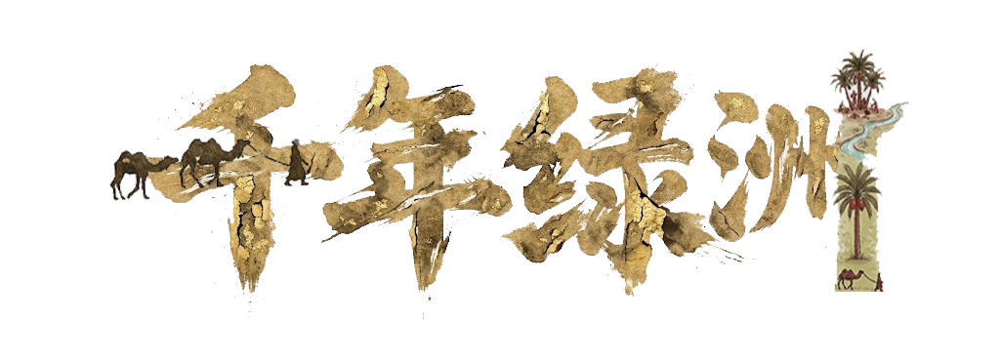

时 空 舆 图
西汉
图 例
城镇 · 治所
文保 · 古迹
绿洲 · 残影
显示古城邦
显示遗址点
显示消亡绿洲
西
域
时 空 舆 图
两千年丝路绿洲 · 城邦治所 · 古籍载录
查看历史地图
移动光标，揭开尘封舆图
首页
历史地图
参考资料
关于我们
参 考 资 料
〔 文献资料待补 〕
关 于 我 们
李明选 李斯琪 张力文
北京大学建筑与景观设计学院
联系我们：
mingxuanli25@stu.pku.edu.cn